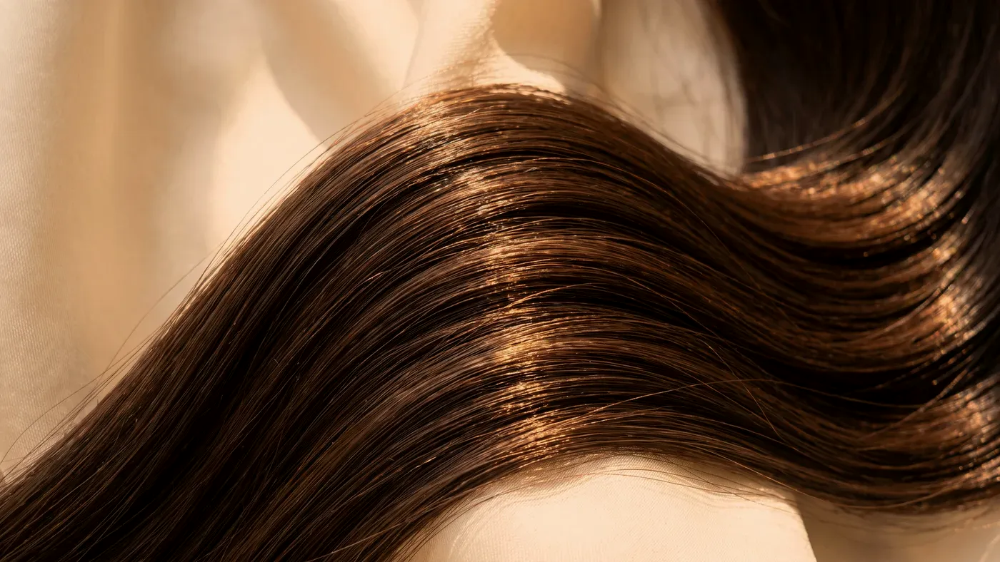
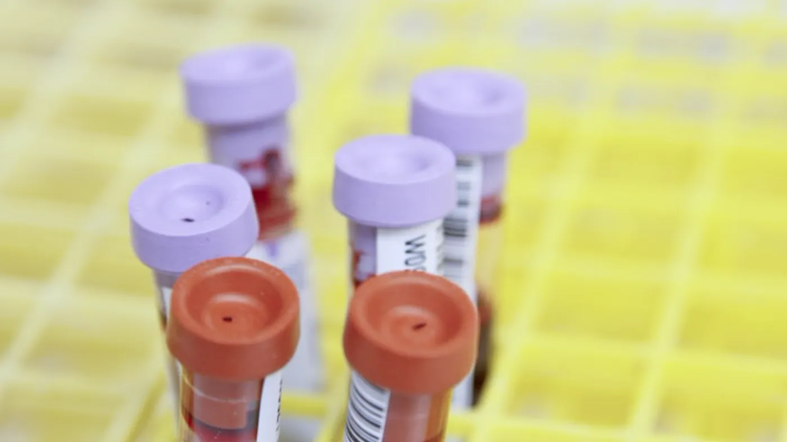

Saç uygulaması · PRP
Saç PRP: kendi kanınızdan hazırlanan plazma
Saç PRP’de koldan alınan az miktarda kan kapalı bir tüpte santrifüj edilir; trombositten zengin plazma bölümü ayrılarak aynı seansta saçlı deriye uygulanır. Hedeflenen, kıl kökünü çevreleyen dokunun kendi onarım süreçlerinin desteklenmesidir. Yeni saç kökü oluşturmaz ve dökülmenin nedenini araştırmanın yerine geçmez.

Temsilî görsel · yapay zekâ ile üretildiTanım ve sınırlar
Saç PRP nedir, neyin yerini tutmaz?
Saç PRP kendi başına bir tedavi planı değildir. Dökülmenin kaynağı ortaya konduktan sonra, plana destek olarak eklenip eklenmeyeceği değerlendirilen bir adımdır.
Kişinin kendi kanından elde edilen ve trombosit oranı yükseltilmiş plazma, yine aynı kişiye ve aynı randevuda saçlı deriye verilir. Trombositler pıhtılaşmada görev alan küçük kan hücresi parçalarıdır; içlerinde doku onarımına ve yara iyileşmesine katkı veren sinyal molekülleri taşırlar.
Uygulama şöyle ilerler: koldan yaklaşık 10–20 mililitre kan alınır, adınıza etiketlenen kapalı bir tüpte santrifüj edilir ve plazma katmanı ayrılır. Hazırlanan plazma bekletilmeden kullanılır; saklanmaz, başka birine uygulanmaz.
Bilimsel kanıta dair açık bir not: çalışmalarda kullanılan hazırlık yöntemleri, trombosit yoğunlukları ve uygulama aralıkları birbirinden farklıdır. Bu yüzden sonuçları birbiriyle kıyaslamak ve her kişiye aynı biçimde uyarlamak mümkün değildir; beklenti bu sınırın içinde konuşulur.
Nedeni araştırmanın yerine geçmez: dökülmenin altında demir ya da ferritin eksikliği, tiroid hastalığı, doğum sonrası dönem, yüksek ateşli bir hastalık, sıkı bir diyet ya da bir ilacın yan etkisi varsa PRP bunu ne gösterir ne de düzeltir; önce bu başlıklar ele alınır.
Kaynak ortadan kalkmadan seanslara devam etmek, sorunu yalnızca ileri bir tarihe taşır. Kaybolmuş kökleri geri getirmez: kıl kökünün kalmadığı alanda saç çıkması beklenmez.
Saç ekiminin karşılığı değildir: kalıtsal yatkınlıkla ilerlemiş belirgin açılmada tek başına bir çözüm sunmaz; bu durumda ilgili uzmanlık dalı önerilir. Genel sağlığı güçlendiren bir işlem değildir: etkisi uygulandığı alanla sınırlıdır; aktif bir saçlı deri hastalığı varsa önce onun tedavisi yapılır.
Plan
Program nasıl kurulur, kaç seans gerekir?
Toplam seans sayısı baştan belli değildir. Önceden sabitlenmiş bir seans dizisi sunulmaz; her ara kontrolde yanıta bakılarak devam, değişiklik ya da bırakma kararı verilir.
Yanıtın değerlendirilmesi
Tek seansta fark beklenmez; saç döngüsü aylar sürer ve beklenen yanıt görülmezse program sürdürülmez.
Çubuk boyları yalnız karşılaştırma içindir; asıl plan muayenede belirlenir.
- Muayene: dökülmenin türü, süresi ve yayılımı; saçlı derinin büyütmeli incelenmesi
- Kan tetkiki: trombosit sayısı ve hemoglobin; yakınmaya göre ferritin, tiroid, B12 ve D vitamini
- Bilgilendirme ve yazılı onam; bilimsel kanıtın nerede sınırlandığı konuşulur
- Başlangıç serisi; ara kontrolde yanıta göre devam ya da bırakma kararı
"Kan tablosunu okumadan plazma hazırlanmaz."
Aynı gün olağan düzene dönülebilir. İlk yarım gün saçlı deri yıkanmaz, kaşınmaz ve ovalanmaz; şapka, bere ya da sıkı toka takılmaz, kan alınan kolla ağır yük taşınmaz. İki gün boyunca hamam, sauna, havuz, deniz ve yoğun terleten egzersiz ertelenir; saç boyası ve kimyasal işlemler de bu süreden sonraya bırakılır. Sonrasında ılık su ve yumuşak şampuanla normal yıkamaya geçilir; iğne noktaları birkaç gün dokununca duyarlı kalabilir.
Kendi plazmanız kullanıldığı için ürüne karşı aşırı duyarlılık beklenmez; yine de her girişimsel işlemde olduğu gibi istenmeyen etkiler görülebilir. Sık ve kısa süreli: kızarıklık, şişlik, batma, kan alınan yerde morluk. Daha az sık: kan verirken sersemlik, gün içinde geçen bir baş ağrısı, ilk haftalarda dökülen saç miktarında geçici artış. Nadir: uygulama alanında enfeksiyon, uzun süre ele gelen küçük sertlik, kan alınan kolda geçici his azalması.
Bir kan ürünüyle çalışıldığı için uygunluk ayrıca dikkatle değerlendirilir ve çoğu zaman öncesinde kan tetkiki istenir.
Bu durumlarda uygulama yapılmaz:
- Trombositlerin sayısını ya da çalışmasını etkileyen kan hastalıkları
- Kontrolsüz pıhtılaşma bozukluğu veya ileri evre karaciğer hastalığı
- Tedavisi süren kanser hastalığı
- Saçlı deride aktif enfeksiyon ya da kapanmamış yara
- Gebelik ve emzirme
Ertelenen veya ayrıca planlanan durumlar:
- Kan sulandırıcı ya da trombosit işlevini etkileyen ilaç kullanımı
- Belirgin kansızlık veya düşük trombosit sayısı
- Ateşle seyreden bir hastalık, yeni atlatılmış bir enfeksiyon ya da kısa süre önce yapılan aşı
- Kaynağı araştırılmamış dökülme — önce neden ortaya konur
- Damar bulmada güçlük, iğne kaygısı ya da bayılma öyküsü
Uygulanan plazma size aittir; ancak cildin temizlenmesinde kullanılan antiseptik ve yüzeye sürülen ürünler dışarıdan gelir. Bir ilaca ya da cilde temas eden bir ürüne daha önce tepki verdiyseniz muayenede bunu belirtin.

Önce tablo, sonra plazma
Dökülmenin nedeni ve kan değerleri görülmeden bu uygulama planlanmaz.
Randevu talebiSaçlı deride ya da kan alınan kolda giderek artan ağrı, sıcaklık, akıntı, yayılan kızarıklık veya ateş gelişirse kontrol gününü beklemeden muayenehaneyi arayın. Solunum güçlüğü, dudak ya da göz kapaklarında hızla gelişen şişlik veya bayılacak gibi olmayla birlikte yayılan kaşıntılı döküntü acil bir durumdur: 112 Acil Çağrı Merkezi’ni arayın ya da en yakın hastanenin acil birimine başvurun.
Bu sayfa genel bilgi vermek amacıyla hazırlanmıştır. Bir uygulamanın size uygun olup olmadığına ancak muayene ve sağlık öykünüz değerlendirildikten sonra karar verilebilir. Girişimsel işlemlerde sonuç önceden taahhüt edilemez; etkinin ne ölçüde görüleceği ve ne kadar süreceği kişiden kişiye değişir. Amacı bir işlemi tanıtmak ya da sizi bir işleme yönlendirmek değildir.
Saç mezoterapisi sık sık saç PRP ile karıştırılır; oysa ikisinin işleyişi ayrıdır. PRP’de kendi plazmanız kullanılır, kan alınması gerekir ve kan değerleriniz kararı doğrudan etkiler; mezoterapide ise hazır bir karışım verilir ve içeriğe karşı duyarlılık ayrıca sorgulanır.
Bazı planlarda iki uygulama dönüşümlü olarak kullanılabilir. Dökülme türlerinin ayrımı için saç dökülmesi, yüz cildinde plazma kullanımı için PRP, bölgeye özel bakış için saçlı deri, iyileşmenin izlenmesi için uygulama sonrası takip sayfalarına bakabilirsiniz.
Sık gelen sorular
Merak ettiğiniz soruya dokunun, yanıtı burada açılsın
Bir adım ötesi
Önce kan tablosu, sonra plan
Dökülmenin nedeni ve kan değerleriniz görülmeden saç PRP planlanmaz. Cevizlik Mah. Ebuzziya Cad. No:47/1, Bakırköy / İstanbul.
Metni hazırlayan ve tıbbi açıdan gözden geçiren: Uzm. Dr. Rahmi Cebeci (Aile Hekimliği Uzmanı · Medikal Estetik Sertifikalı).
Buradaki anlatım herkese yöneliktir; size özel bir teşhis ya da tedavi planı sunmaz, muayenenin yerini tutmaz. Her uygulamanın etkisi kişiye göre farklı olur.